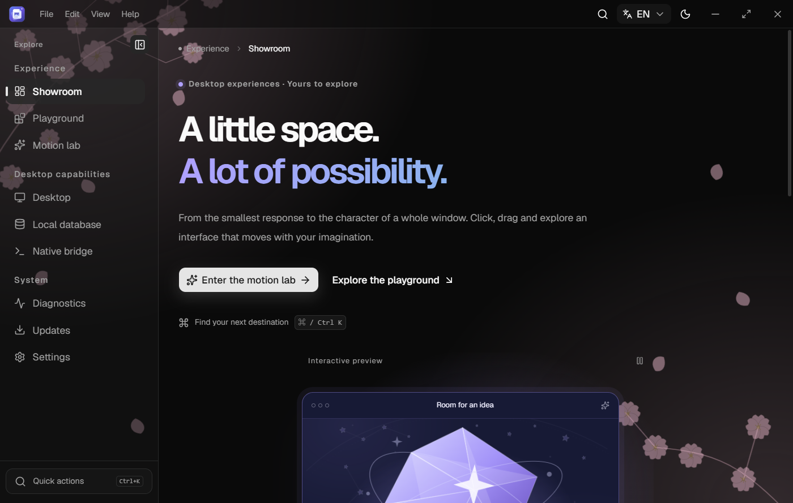

让界面成为你的
明暗与系统主题、主题色、字号、圆角、原创 SVG 皮肤，以及简体中文 / English。命令面板连接菜单、快捷键与设置搜索。
一个桌面应用，从这里开始
设计、原生能力与工程约定，在同一个起点相遇。用熟悉的 React 构建界面，用 Rust 连接桌面，把精力留给你的产品。

以上为项目真实截图。此页面是项目介绍；浏览器预览与原生桌面能力的边界见下方说明。
从界面，到桌面
既能探索交互，也能切换到精简模式。按真实产品的需要，保留、替换和扩展。
明暗与系统主题、主题色、字号、圆角、原创 SVG 皮肤，以及简体中文 / English。命令面板连接菜单、快捷键与设置搜索。
主次窗口、单实例恢复、窗口位置记忆和系统托盘。按用户选择启用后台运行与登录启动。
原子设置存储、迁移、跨窗口同步与保存重试。Rust 管理 SQLite 笔记，提供参数化查询与版本冲突处理。
Rust 生成 TypeScript IPC 绑定；统一门面收敛原生调用，结构化错误说明失败原因与重试语义。
三端构建工作流、版本一致性、安装包收集与 SHA-256 清单。更新下载和签名验证链路按维护者配置启用。
前端、工程脚本与 Rust 测试，真实桌面 E2E，局部错误恢复、环境诊断与脱敏日志预览。
可理解的边界，可持续的扩展
界面、通信与系统服务各有职责。通过单一入口表达约定，再用类型与检查执行约定，让改动可以被理解和验证。
阅读架构与扩展原则01页面按需加载，演示模式可切换
02命令、路由与语言各有统一注册入口
03按领域复杂度拆分，避免预建空壳层
src/lib/tauri.ts
commands.rs事件同步变化，命令返回操作结果。
从源码，走到你的产品
先配置 Node.js、pnpm、Rust 与平台依赖。工具版本以仓库配置为准，首次原生编译需要构建依赖。
# Clone & enter the project
git clone https://github.com/YanChao001/tauri-desktop-starter.git
cd tauri-desktop-starter
# Install, check, launch
pnpm install --frozen-lockfile
rustup toolchain install
pnpm run doctor
pnpm app:dev只想浏览界面？运行 pnpm dev。在浏览器中可体验主题、语言与交互；SQLite、托盘、多窗口和更新需要通过 pnpm app:dev 启动原生应用。本展示网站不执行这些原生操作。
不止代码，还有协作的上下文
开始前，了解这些
仓库提供 Windows x64、macOS arm64 / x64 和 Linux x64 的构建与 CI 工作流。Windows 安装包为 NSIS / MSI，macOS 为 DMG / APP，Linux 为 DEB / RPM / AppImage。实际可下载版本以 Releases 为准，仍需针对你的目标系统做安装验收。
需要由应用维护者配置更新公钥、发布凭据和平台签名。模板默认更新公钥为空，不发起更新请求。系统代码签名与更新签名承担不同职责，具体接线与限制见构建发布文档。
这是桌面应用基座，包含交互演示与原生能力示例。组件场景使用页面内演示数据；持久笔记由原生 SQLite 页面管理。账户、云同步、业务 API 和敏感凭据存储需要按产品需求设计。
项目使用 MIT 许可证。派生项目需保留许可证要求的声明，并分别核对所使用依赖和分发渠道的要求。应用品牌、标识符、签名和安全联系方式应改为你自己的配置。
TAURI DESKTOP STARTER
从一个清晰的起点，构建属于你的桌面体验。
在 GitHub 上开始